Wie baut man ein Alien-Gesicht (nicht schwer) ?
Erst einmal ein paar Informationen zum lesen
Auf manchen Systemen (Linux KDE/Gnome und SGI IRIX 4dwm) gibt es ein eigenes
Programmicon fuer "dune4kids", es sieht dann irgendwie so aus:


Auf Systemen wie Micro$oft Windows oder MacOSX ist aber nur ein
(anderes) Programmicon vorhanden:


Normalerweise startet das Programm dieses Icons beim ersten Mal
in der englischen Vollversion, in der Regel mit sehr vielen Icons
und zu vielen Menues.

Es muss dann zuerst einmal auf Deutsch und dann auf dune4kids umgestellt
werden.
Man muss
hier draufklicken um auf die richtige Version umschalten zu
können.

Was tun, wenn das Programm abstürtzt ?
Mit etwas Glück kann man den letzten Stand neu laden, wenn man bei
den aktuellen Dateien eine neue ".dune_crash" Datei findet.

Navigation
Navigation bedeutet das Herumbewegen im 3D-Modell.
Das ist wichtig, denn es kann sehr leicht passieren, dass man vor oder in
sein Werkstueck gerät und deswegen ueberhaupt nichts mehr sieht.
Wenn man nichts mehr sieht, gibt es zwei Vorgehensweisen, die man meistens
gemeinsam anwendet:
- Man geht nach hinten
Vorwärts und Rueckwärts geht man, indem man gemeinsam die linke
Maustaste und die "Shift"-Taste (deutsche Tastatur: "Leerer-Pfeil-hoch-Taste")
gedrückt hält.
In der Einstellung "Examine" (wenn das Icon  gedrueckt
ist) funktioniert das auch mit der mittleren Taste einer 3-Tasten-Maus.
Bei einer Maus mit Scrollrad muss man das mittlere Scrollrad
drücken.
gedrueckt
ist) funktioniert das auch mit der mittleren Taste einer 3-Tasten-Maus.
Bei einer Maus mit Scrollrad muss man das mittlere Scrollrad
drücken.
- Man dreht die 3D-Welt
Drückt man gemeinsam die linke Maustaste und die "Control"-Taste
("strg" auf der deutschen Tastatur) dann dreht sich die ganze
3D-Welt vor einem, wenn man die Maus bewegt. Das wird normalerweise
dazu benutzt, um ein neu erzeugtes Objekt von allen Seiten betrachten
zu koennen, hilft aber auch dann, wenn man im Nichts steht.
Man muss aber daran denken, dass der Inhalt nicht nur hinter einem
versteckt sein kann, sondern auch oben, unten, links oder rechts.
Das bedeutet, dass man oft ganz schön "kurbeln" muss, bis man
sein Objekt wiederfindet.
Zusätzlich gibt es noch die Möglichkeit, die linke Maustaste,
die "Shift"-Taste und die "Control"-Taste gleichzeitig gedrückt
zu halten (oder das Icon  benutzen).
Damit kann man sich in Richtung der Bildschirmfläche, also nach
oben, unten, links oder rechts bewegen.
benutzen).
Damit kann man sich in Richtung der Bildschirmfläche, also nach
oben, unten, links oder rechts bewegen.
Nachdem man sein Objekt wieder gefunden hat, sollte man wieder das
"Examine"-Icon drücken, damit man wieder
wie gewohnt arbeiten kann.
Gleichzeitig sollte man sein Objekt anwählen und dieses Icon
 drücken, damit man es wie gewohnt
drehen kann.
drücken, damit man es wie gewohnt
drehen kann.
Icons für Veränderungen
Um zu zeigen, wie man Dinge verändern kann, wird einfach mal ein
Quader erzeugt.

Icons, um ganze Objekte zu verändern:
- Verschieben:


- Drehen:


- Vergrössern/verkleinern:


- Gleichartig vergrössern/verkleinern:


- Drehpunkt verschieben:


Mit weissen Kästchen kann man Objekte selber verändern.
Mit den einzelnen Pfeilicons  kann man die Richtung
steuern.
kann man die Richtung
steuern.
Wird zum Beispiel nur der grüne Pfeil hereingedrückt,
 kann bei
kann bei

ein Kästchen nur in Richtung des grüne Pfeils geschoben werden.
 .
.
Genau wie man Pfeile auch an den Schäften statt an den Spitzen
packen kann, um in einer Ebene verschieben zu können, kann man
auch zwei Pfeile gleichzeitig hereingedrücken  ,
um ein Kästchen in einer Ebene verschieben zu können.
,
um ein Kästchen in einer Ebene verschieben zu können.
Wie baut man ein Alien-Gesicht (nicht schwer) ?
Die folgende Beschreibung sollte man eher als Vorschlag betrachten und
nicht als Kochrezept, das man sklavisch befolgen muss.
Veraendern -> X gespiegelted Veraendern muss immer
hereingedrückt sein.
Starten Sie mit einem Pilz: Neu -> Pilz -> rund
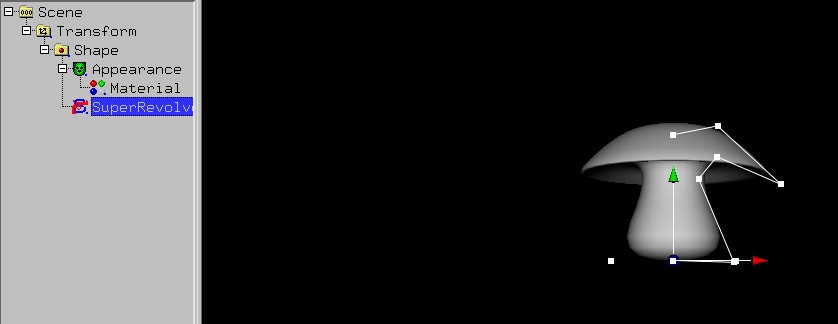
Verschieben Sie die weissen Kästchen (das Kästchen mit der Maus
anklicken und mit gedrückter linker Maustaste verschieben)
bis etwas Kopf-ähnliches xentsteht.
Benutzen Sie Bwewegungsart -> Vergroessern/Verkleinern und
verschieben Sie das rote Kästchen um den Kopf etwas shmaller zu
kriegen.
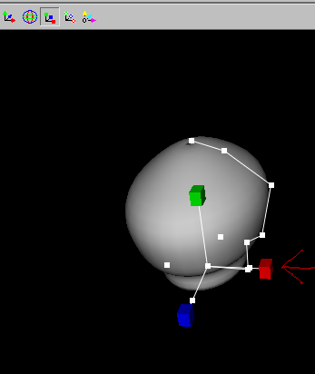
Jetzt muss das Modell verformbar gemacht werden.
Das geht mit dem entsprechenden Icon oder im Menü mit
Veraendern -> Umwandeln in -> Nurbs(Patch)Surface.
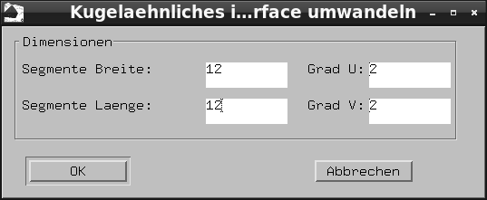
Tragen Sie im Dialog die Anzahl der (Kontroll-)Punkte in den zwei Richtungen
(12 und 12) ein und drücken Sie OK.
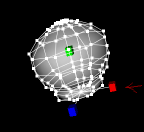
Navigieren Sie näher an das Objekt heran, um mit der gedrückten
rechten Maustaste zwei (Kontroll-)Punkte an der Vorderseite auszuwählen.
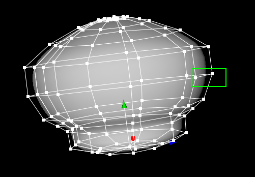
Klicken Sie auf ein grünes Kästchen und verschieben Sie die
Maus mit festgehaltener linker Maustaste. Die grünen Kästchen
(Kontroll-)Punkte verschieben sich und das Objekt verändert sich.
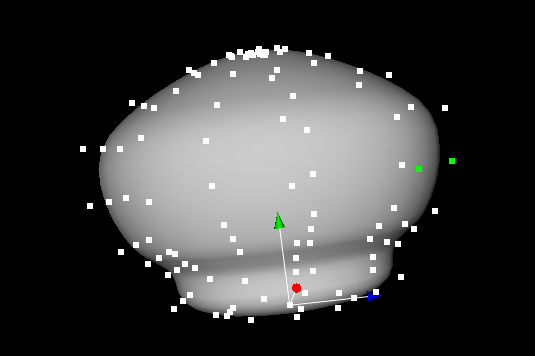
Wä:hlen Sie zwei (Kontroll-)Punkte der Oberlippe an.
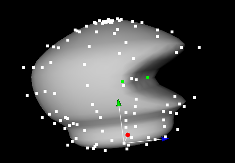
Und verschieben Sie sie nach unten.
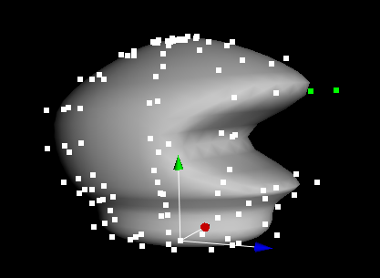
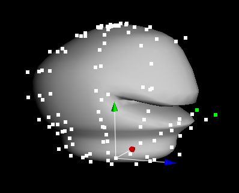
Bentutzen Sie Animation -> Animation erzeugen
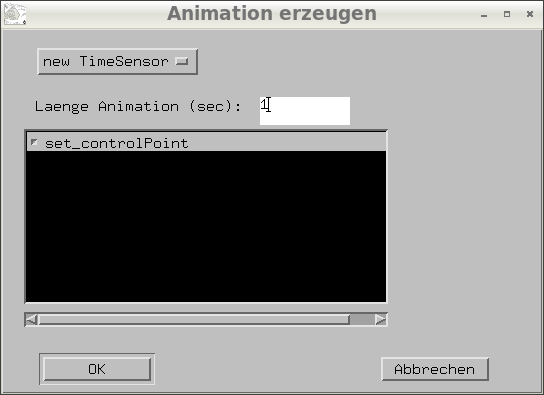
Ändern Sie die Länge der Animation auf 1 Sekunde.
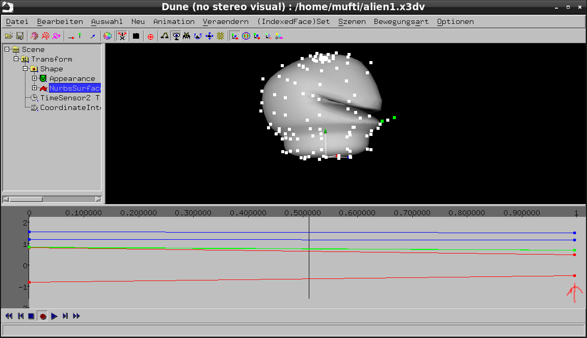
Klicken Sie im Animations-Daten-Fenster das Ende der Line an, damit
die Animation an dieser Stelle nachlos weitergeht.
Klicken Sie das Animations-Daten-Fenster in der Mitte an und drücken
Sie das Record-Icon in der untersten Zaile hinein.
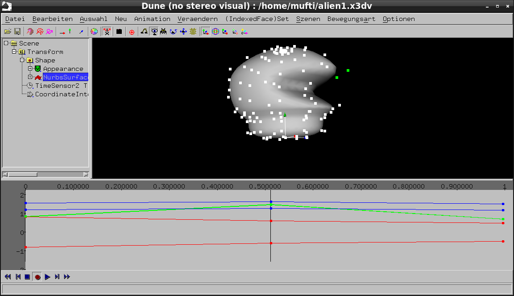
Wählen Sie 2 (Kontroll-)Punkte der Unterlippe an und verschieben Sie sie
nach oben.
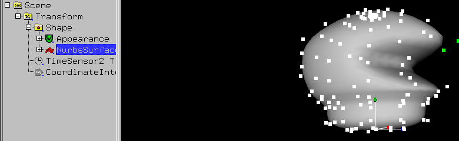
Klicken Sie auf Transform und benutzen Sie Neu -> kugel
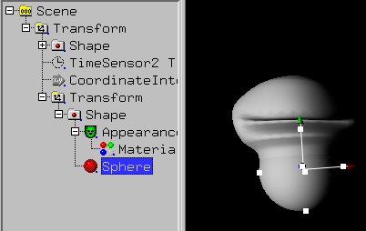
Verschieben Sie die Kugel an eine passende Stelle
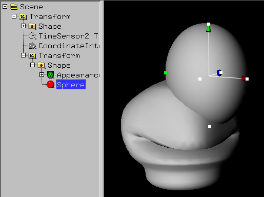
und machen Sie die Kugel kleiner
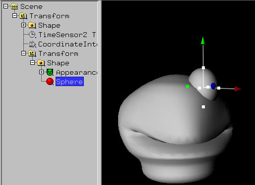
Klicken Sie auf Transform der Kugel
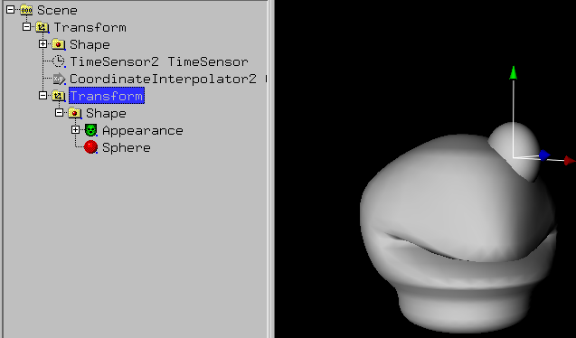
und benutzen Sie Neu -> kugel
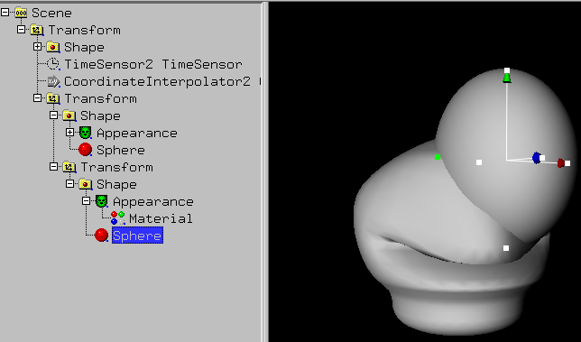
Machen Sie die neue Kugel kleiner, sie verschwindet jetzt in der alten Kugel.
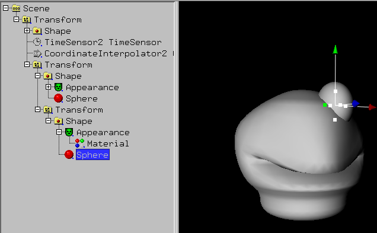
Verschieben Sie die neue Kugel nach vorne.
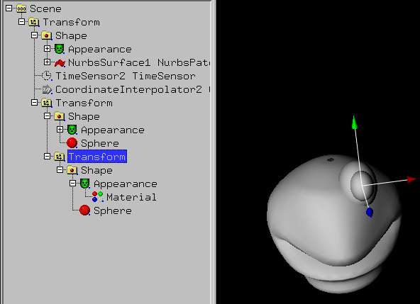
Wählen Sie Material der neuen Kugel an (sie müssen wahrscheinlich
das +-Icon von Appearance anklicken)
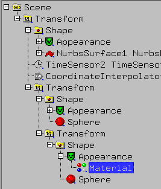
Bentzen Sie
Veraendern -> Farbe (braucht Material oder ... -> Normal
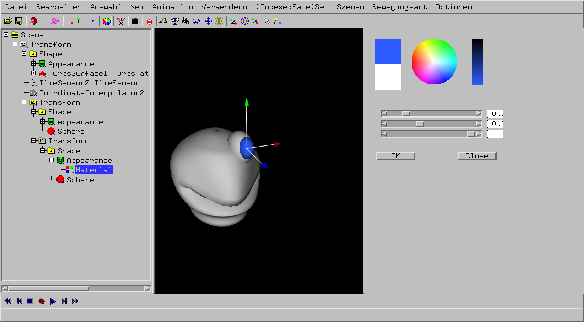
Klicken Sie im Farbrad eine blaue Farbe an.
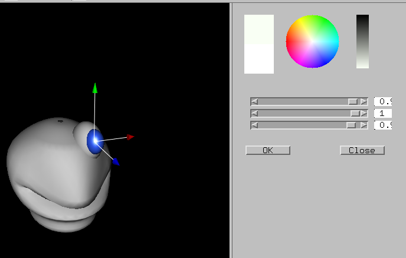
Bentzen Sie
Veraendern -> Farbe (braucht Material oder ... -> Glaenzen
und klicken Sie im Farbrad eine weisse Farbe an.
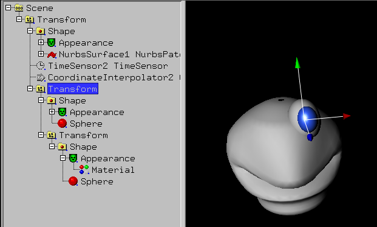
Klicken Sie auf den Transform der ersten Kugel.
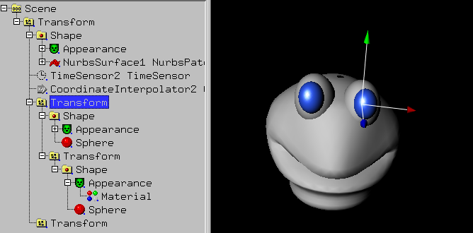
Benutzen Sie Bearbeiten -> kopieren und
Bearbeiten -> symetrisch einfügen -> x, um aus einem Auge
zwei Augen zu machen.